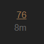

For a more extensive version of this user guide, click here.
- Basic Terminology
- Browsing the Forum
- Navigation
- Reading Topics
- Taking Part in Conversations
- Actions and Reactions
- Notifications
- Keyboard Shortcuts
1. Basic Terminology
-
Topic:
Also known as a “thread,” a topic is a collection of messages, or an announcement, with a title, listed in a category, beginning with an Original Post, and including all replies in chronological order. -
Post:
Each element of a topic is referred to as a post, including all replies. -
Original Post (or OP):
The first post in any topic. This is key since it determines the focus of the topic and is what the title and tags will link to. -
Tag:
A marker placed on a topic to describe it; sometimes referred to as a subcategory. While a topic can only have one category, it can have multiple tags. For example: Forum Matches is a category, whereas Signups is a tag.
2. Browsing the Forum
Our homepage displays all Categories, as well as all the Latest topics, but this can be filtered in a number of other ways:
-
By what’s ‘New’ to you: new topics are those created in the last 2 days that you have not opened yet to keep the list fresh and relevant. New topics show a small blue dot next to the topic title.
-
By level of activity: if you click on ‘Top’ the conversation topics will be listed in order of most activity (views and replies) for a specific time period. You can choose whether this is for all time, or select a specific period such as quarter, month, week or just today.
-
By bookmarks: bookmarks allow users to save a topic or post to be viewed at a later time. To bookmark a topic, scroll to the bottom of the page and click the “Bookmark” button. To bookmark a post, press the “show more” button at the bottom right of the message, and click the bookmark icon. A menu will pop up allowing you to give the bookmark a name, as well as a notification to remind you to return to it at a later time.
Bookmarking a topic:
Bookmarking a post:
See who is participating
There are several ways to see who is involved in topics.
You will see a selection of avatars (profile pictures) of:
- the user who started the topic (always the first photo);
- a selection of the most active participants;
- and, who created the most recent post. This photo appears in Latest on the homepage.
3. Navigation
- For Search, the Menu, or your User page, use the icon buttons at the upper right. Along with these, you can click the Discord icon for an invitation to the Throne of Lies Discord.
- Discord allows users to search in a wide variety of ways. In order to expand your search possibilities, click options after pressing the magnifying glass icon.
4. Reading Topics
Keep scrolling
Click a topic title and read down the list of replies in chronological order, following links or previewing replies and quotes as you go. Use your mouse to scroll the screen, or use the timeline scroll bar on the right which also shows you how far through the conversation you’ve read. On smaller screens, select the bottom progress bar to expand it.
Jump back in
Selecting a topic title will take you to your last read post in the topic.
- To enter at the top ↑ or bottom ↓ instead, click the reply count to open a menu.

Finding posts
Looking for a specific post in a topic?
- In order to jump to any post within a thread, press #, and you will be presented with the option to enter a specific post number or date.
5. Taking Part in Conversations
Replying
Press any button to open the editor panel at the bottom of your browser. You can continue reading (and even search or navigate to different topics) while you compose your reply.
Drafts
Drafts will automatically be saved as you write. If you minimise the editor or navigate to a different topic, the editor might disappear. To open a draft, return to the topic you were replying to or click the highlighted bar at the bottom of your browser, and the editor will reappear with your draft.
Quoting
To insert a quote, select the text you wish to quote, then press the Quote button that pops up. Repeat this for multiple quotes even from different posts and different users. The quoted text will point to their original source.


Mentioning
To notify someone about your reply, mention their name.
- Type @ to begin selecting a username. This search will also search the name fields in case you don’t know a particular username.
Emoji
To use standard Emoji , just type : to match by name, or traditional smileys ;)
Alternatively, click on the Emoji icon to see a complete list of Emoji to select from.
Oneboxes (Link Previews)
Read details about this feature in: Rich link previews with Onebox
- To generate a summary for a link, paste it on a line by itself.

Formatting
Your reply can be formatted using simple HTML, BBCode, or Markdown:
This is <b>bold</b>.
This is [b]bold[/b].
This is **bold**.
For more formatting ideas, I suggest Magnus’ Post Formatting Tips or the Unofficial Discourse User Reference Guide.
6. Actions and Reactions
There are action buttons at the bottom of each post:
- To let someone know that you enjoyed and appreciated their post, use the like button. Share the love!
- Grab a copy-pasteable (permalink) link to any reply or topic via the link button.
- Use the
…button to reveal more actions. Flag to privately let the author, or the site staff, know about a problem. Bookmark to find this post later.
7. Notifications
When someone is talking directly to you — by replying to you, quoting your post, mentioning your @username, or even linking to your post, a blue number will immediately appear over your profile picture at the top right.
When you have been sent a Personal Message you will receive this in your Inbox and a green number will appear over your profile picture to the left.
Click your profile image to scroll through all your notifications.
Topic notifications
You can change your notification level for any individual topic via the notification control at the bottom, and right hand side, of each topic.
Category notifications
Notification level can also be set per category. To change any of these defaults, see your user preferences, or visit the category page, and use the notification control above the topic list, on the right side.
8. Keyboard Shortcuts
In order to make life easier, Discourse features many unique keyboard shortcuts. To access a list of these shortcuts, you can press ? when not drafting a post.
{kind=link}